I had a few clips on my phone that hadn't made it into a video yet so I figured I'd make a short update.
First, I printed a Vanguard JT FP lower receiver. Here's the parts list for the gun:
Del-Ton AR-15 Complete Upper Assembly, 16", 5.56 NATO from Cheaper Than Dirt
AR-15 Lower Build Kit from Black Rifle Depot
UTG .223/5.56 Polymer 30 Round Mag
Wolf Military Classic .223 Remington
Here's a few pictures from printing and the finished product:
First failed print:
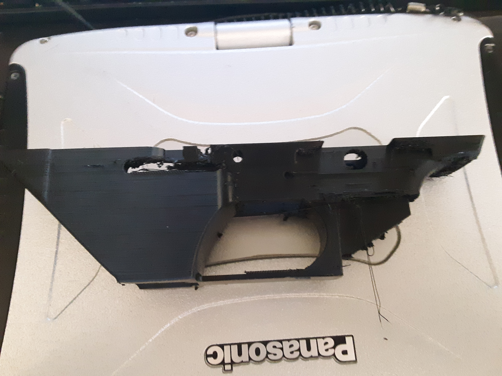
Successful print:
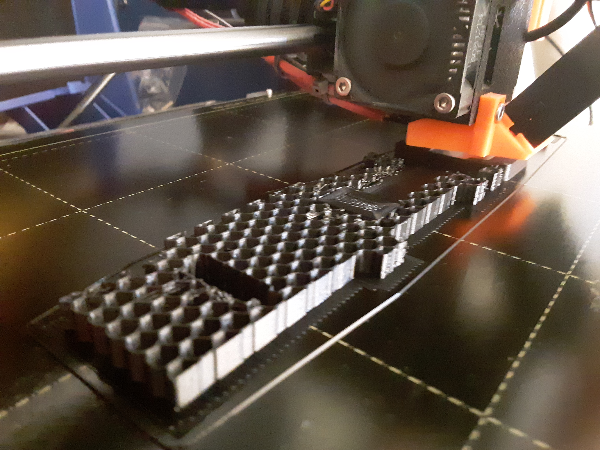
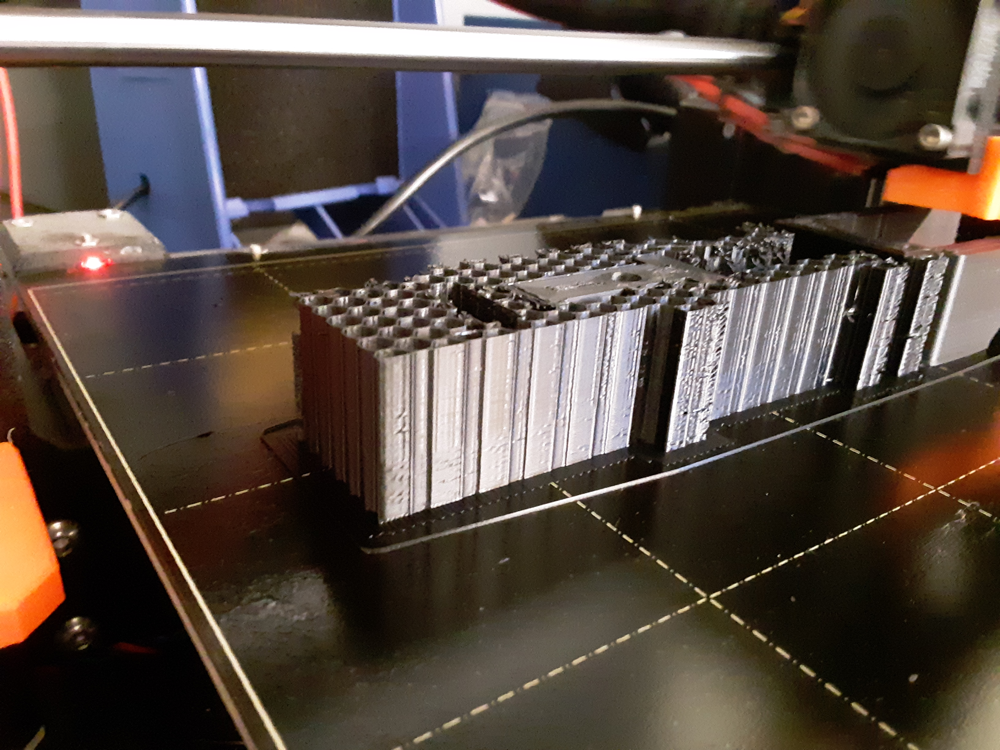
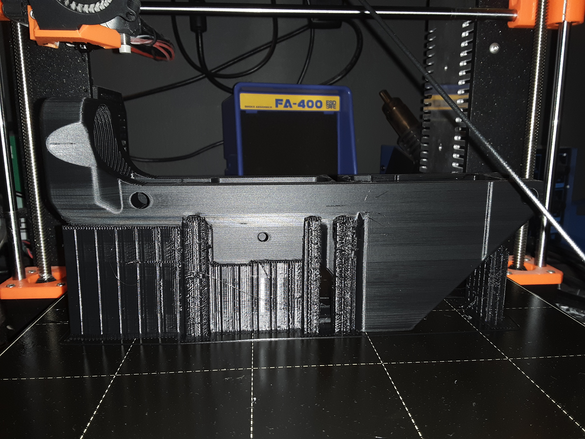
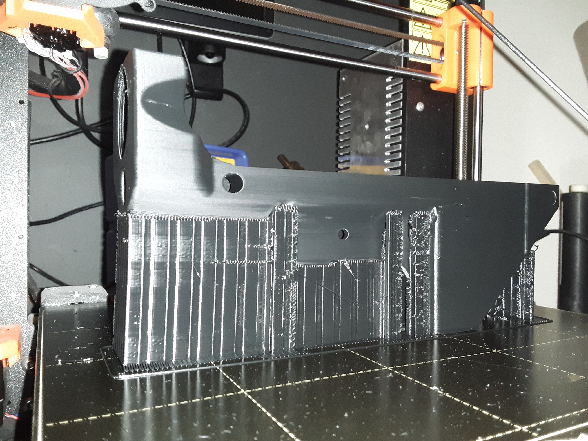
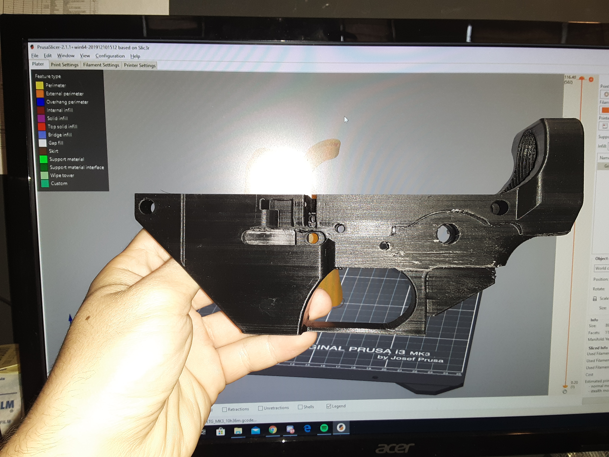
I'll post a test video once I get it built. Since the threads where the tube for the stock screws in came out a little weird, I modified the stock tube for
the Warfairy P15 by shortening it using OpenSCAD and used it as a thread test.
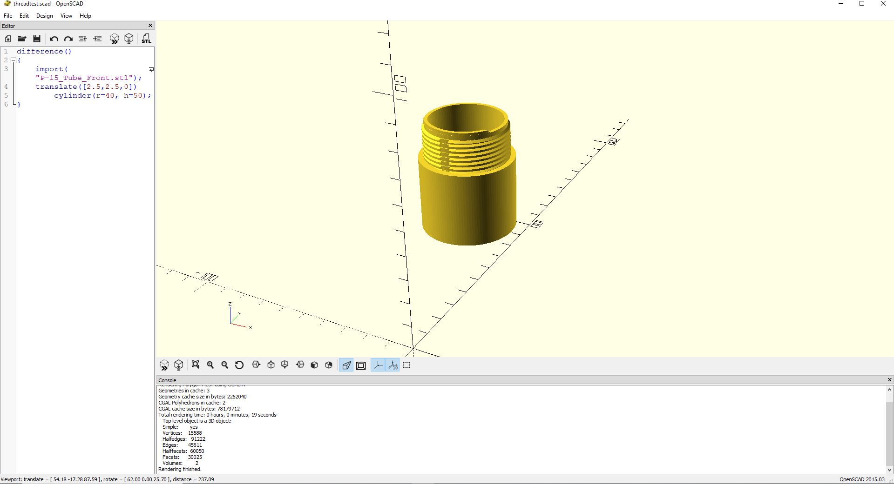
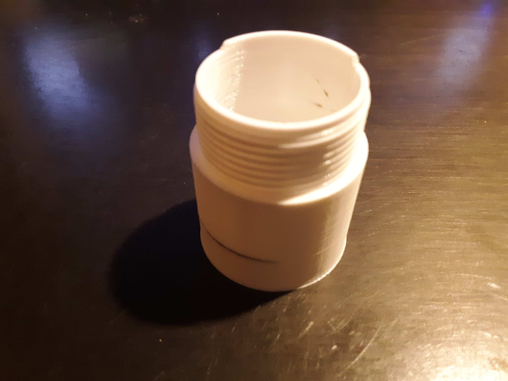
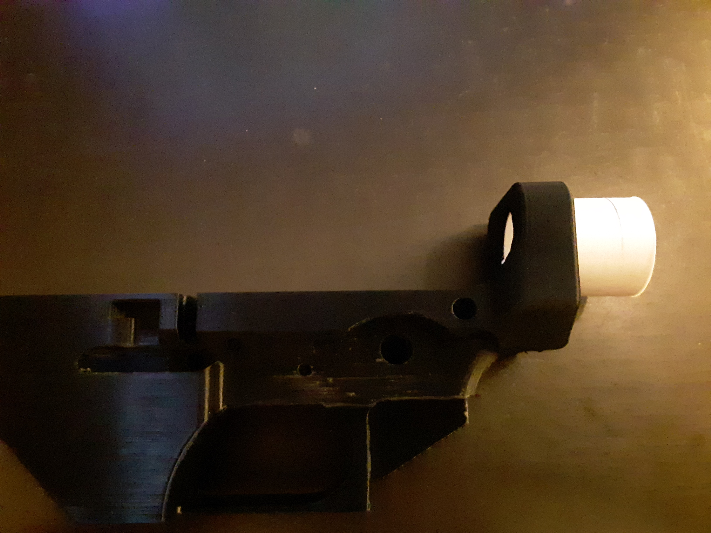
It fit perfectly, so I guess the threads coming out funny is really only an aesthetic issue instead
of a functional one. The STL for my modified tube to test the threads can be found here. The files for the
Warfairy P15 and the Vanguard lower receivers can be found in the FOSSCAD megapack (Github, FOSSCAD).
I had been having problems printing rectilinear supports using the default PrusaSlicer settings. Specifically, the supports would always fail at some point in the print. After a little tweaking,
I found out that reducing the support print speed to 35mm/s and using honeycomb supports fixed the problem completely. Additionally, the honeycomb supports feel stronger and are easier to remove.
I'm not sure why they aren't the default supports in PrusaSlicer.
For his engineering final project, my friend John Racy has been working on a nitinol actuator. He needs to have the wire mounted in a way such that the entire coil is one piece, but because he is
bolting the ends together he needs to have an electrically resistive coating that needs to be thermally conductive to allow for the wire to quickly cool down. While just bouncing ideas off each other,
we decided to try oxidizing copper to see how electrically resistive it was and how practical it was as a solution to his problem.
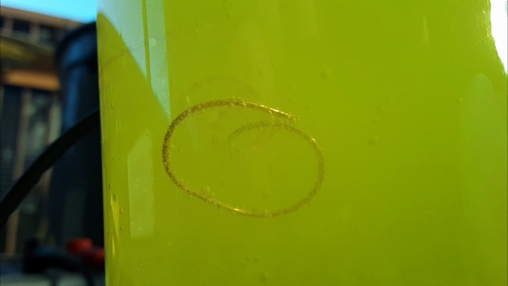
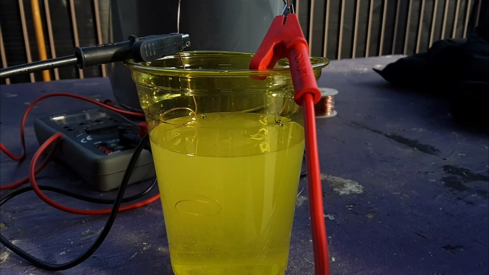
We didn't have a big enough power supply, so we kind of just made
bubbles instead of actually oxidizing anything. I think using white vinegar or Miracle-Gro to chemically oxidize the copper would be more effective.
Additionally, Emmett and I figured out that cutting a pipe in half straight down the middle is significantly more difficult than we thought it would be, even with a proper jig. We might change our
rail system to work off of two full copper tubes acting as rails that a sled travels down. This does change our projectile weight significantly, though.